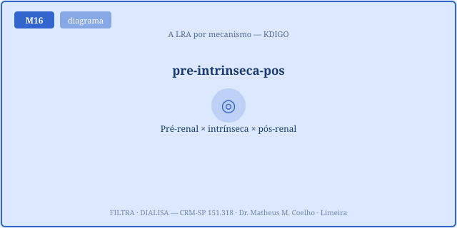
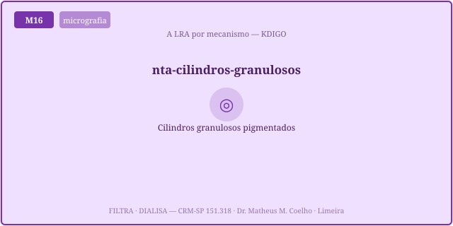
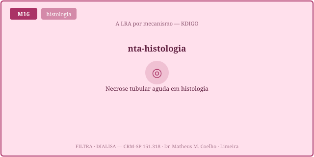
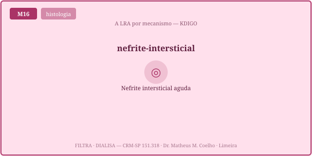
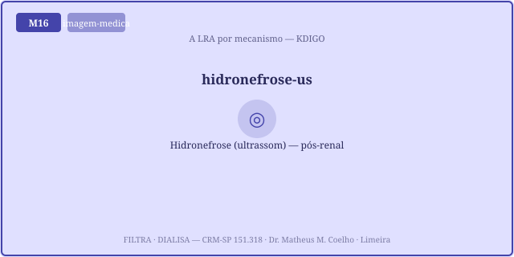
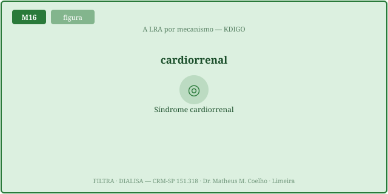
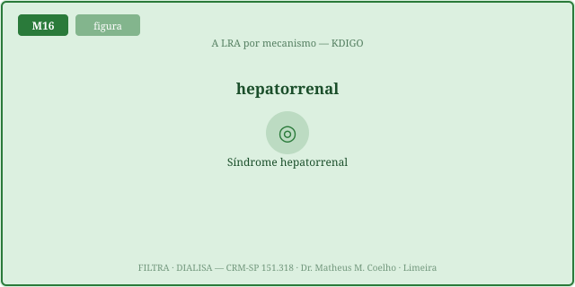

A LRA é homeostasia que falhou. O rim defende o meio interno; quando a TFG despenca, volume, eletrólitos, ácido-base e escórias saem do controle. Mas o mesmo número (creatinina, oligúria) projeta-se de mecânicas que não se parecem. As Fig. 1–8 voltam no Caso, na Trilha e na Avaliação. A fórmula-fio: FE_Na = (U_Na·P_Cr)/(P_Na·U_Cr)·100 — o índice que separa as vias.
A TFG vem de Starling: TFG = Kf·(P_GC − P_BC − π_GC). Três lesões a derrubam: aferente fechada (P_GC↓, pré-renal, na entrada), túbulo necrótico (NTA, no meio) e ureter pinçado (P_BC↑, pós-renal, na saída). A mesma TFG-sombra por três caminhos.

O KDIGO mede gravidade, não mecanismo. Estágio 1: Cr ×1,5–1,9 (ou ↑0,3 mg/dL) ou débito <0,5 mL/kg/h; estágio 2: Cr ×2–2,9 ou <0,5 por 12 h; estágio 3: Cr ×3 (ou alcançar ≥4,0 mg/dL no contexto de LRA já estabelecida — i.e. com a alta aguda ≥0,3 em 48 h ou ×1,5; não vale para o crônico que já mora em 4,0) ou <0,3 por 24 h ou anúria. A pior das duas define.
No pré-renal o túbulo está íntegro e ávido: reabsorve Na com fúria → FE_Na <1%, U_osm >500, BUN/Cr >20. Na NTA o túbulo está quebrado e não reabsorve → FE_Na >2%, U_osm ~300 (isostenúria). A FE_ureia (<35% no pré-renal) salva quando há diurético em uso.

A necrose tubular aguda: isquemia (choque) ou nefrotoxina (contraste, aminoglicosídeo, mioglobina) mata o epitélio tubular. A medula vive à beira da hipóxia (M2) — é a primeira a cair.


Na obstrução (próstata, cálculo, tumor) a urina represa, a pressão sobe retrógrada até a cápsula de Bowman (P_BC↑) e estrangula a filtração. O ultrassom mostra hidronefrose. Desobstruir restaura a TFG.

Duas armadilhas: o cardiorrenal (a FE_Na é baixa, mas o motor é congestão venosa — volume PIORA) e o hepatorrenal (vasoconstrição funcional na cirrose; rim normal, FE_Na quase zero). Em ambos a FE_Na baixa não autoriza volume.


Plantão de UTI. Cinco doentes, todos com creatinina ~2,5–3,0 e oligúria. O número é igual — o mecanismo, não. (Use as Fig. 1, 3, 6, 7, 8 como âncoras.)
Não — é uma sombra. A mesma creatinina/oligúria nasce de três mecânicas: P_GC↓ (pré-renal), parênquima lesado (intrínseca) e P_BC↑ (pós-renal). O número não distingue; os índices e o contexto, sim.
Da física de Starling: TFG = Kf·(P_GC − P_BC − π_GC) (M1). Cada termo é uma porta de falência: P_GC, P_BC e Kf/superfície tubular.
Gravidade, não mecanismo. Dois eixos: creatinina (×1,5–1,9 / ×2–2,9 / ×3 ou ≥4) e débito urinário (<0,5 / <0,5 por 12h / <0,3 por 24h ou anúria). A pior das duas define o estágio.
A creatinina atrasa dias (cinética, M4); a oligúria cai em tempo real. Juntos cobrem a fraqueza um do outro.
FE_Na = (U_Na·P_Cr)/(P_Na·U_Cr)·100. Pré-renal: túbulo íntegro e ávido → FE_Na <1%. NTA: túbulo quebrado, Na escapa → FE_Na >2%.
O diurético força natriurese e a FE_Na sobe falsamente. Use a FE_ureia (<35% no pré-renal): a reabsorção de ureia no proximal independe do diurético de alça.
Pré-renal concentra (ADH + túbulo bom) → U_osm >500. NTA perdeu o gradiente medular → isostenúria (~300, igual ao plasma).
Debris de células tubulares descamadas — a assinatura visual da NTA. Sedimento limpo no pré-renal; granuloso na NTA; hemático na glomerular; eosinófilos na NIA.
P_BC↑ pela urina represada → hidronefrose ao US. Desobstruir (sonda/nefrostomia) restaura a TFG; soro não resolve.
É via intrínseca disparada por um fármaco (AINE, IBP, antibiótico): infiltrado intersticial alérgico, eosinofilúria. A "dose" é suspender o fármaco.
O RAAS está ávido (FE_Na <1%), mas o motor é congestão venosa, não depleção. Dar volume sobe a pressão venosa renal e piora a TFG. A conduta é descongestionar.
Vasoconstrição renal funcional: a vasodilatação esplâncnica da cirrose derruba o VCE, o RAAS fecha a aferente. Rim normal, FE_Na <0,1%. Trata-se com vasoconstritor esplâncnico + albumina, não SF isolado.
A TFG é a guardiã do meio interno. Na LRA, volume, eletrólitos, ácido-base e escórias saem do controle. Restaurar a homeostasia exige tratar o mecanismo certo — a sombra (creatinina) só guia quem lê o que a produziu.
Os controles do Lab movem o ponto laranja neste plano. À esquerda e no alto (FE_Na <1%, U_osm alta) mora o pré-renal; à direita e embaixo (FE_Na >2%, U_osm ~300) a NTA. A linha vertical é a fronteira diagnóstica FE_Na = 1%. A mesma creatinina-sombra cai em pontos muito diferentes — eis a decomposição.
| Variável | Atual | Comentário |
|---|---|---|
| TFG estimada (mL/min) | — | Kf·(P_GC−P_BC−π) |
| FE_Na (%) | — | <1 pré-renal · >2 NTA |
| FE_ureia (%) | — | <35 pré-renal (sob diurético) |
| BUN/Cr | — | >20 pré-renal |
| U_osm (mOsm/kg) | — | >500 pré-renal · ~300 NTA |
| Estágio KDIGO | — | pior de (Cr, débito) |
| Mecanismo provável | — | a via dominante |
| Responde a volume? | — | cura ou veneno |